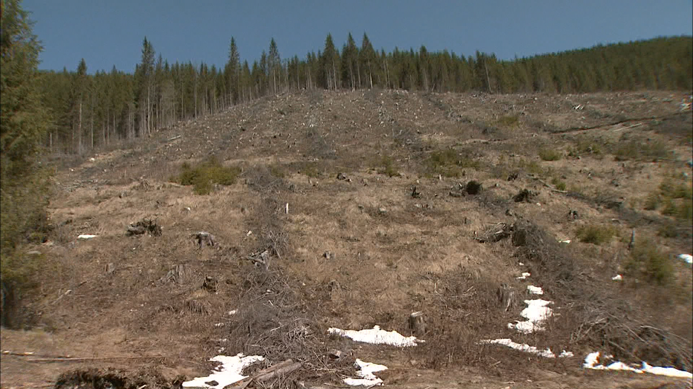

Încălzirea globală este rezultatul acumulării gazelor cu efect de seră în atmosferă, în special dioxidul de carbon (CO₂), metanul (CH₄) și oxidul de azot (N₂O).
Acestea formează un „strat” invizibil care împiedică căldura să se întoarcă în spațiu, ducând la creșterea temperaturii globale.
Activitățile umane sunt principala cauză a acestui fenomen și au accelerat schimbările climatice într-un ritm alarmant în ultimele decenii.
Principalele cauze ale încălzirii globale
Arderea combustibililor fosili – pentru energie, încălzire și transport. Eliberează cantități mari de CO₂.
Defrișările masive – pădurile absorb CO₂; când sunt tăiate, acesta rămâne în atmosferă.
Creșterea industrializării – fabricile, centralele electrice și alte procese industriale eliberează gaze poluante.
Transportul rutier și aerian – automobilele, avioanele și navele folosesc combustibili fosili.
Agricultura intensivă – eliberează metan și oxid de azot, gaze cu efect de seră foarte puternice.
Deșeurile și gropile de gunoi – generează metan în timpul descompunerii organice.

Imaginea de mai sus ilustrează una dintre cele mai grave cauze ale încălzirii globale – defrișările. Fiecare copac tăiat înseamnă mai puțin oxigen, mai puțină absorbție de CO₂ și un climat mai instabil.